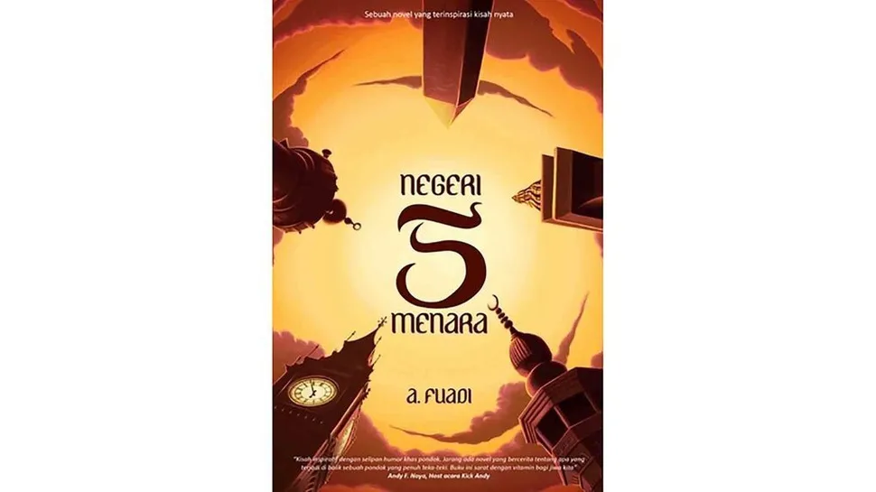

Bedah Buku: Negeri 5 Menara
Ditulis oleh: Ahmad Fuadi

Buku ini menceritakan perjalanan hidup Alif, seorang anak Minang yang menempuh pendidikan di Pondok Pesantren Madani. Awalnya penuh keraguan, namun perlahan Alif menemukan makna perjuangan, persahabatan, dan kekuatan impian.
“Man Jadda Wajada — Siapa yang bersungguh-sungguh, dia akan berhasil.”
Kalimat ini menjadi semangat utama dalam buku tersebut. Kisah yang ditulis berdasarkan pengalaman nyata ini sangat menginspirasi, terutama bagi pelajar yang sedang mengejar mimpi mereka. Penulis berhasil menyampaikan pesan-pesan moral melalui narasi yang hidup.
Buku ini cocok dibaca oleh remaja maupun orang dewasa yang sedang mencari motivasi hidup. Cerita persahabatan, perjuangan, dan kecintaan pada ilmu membuatnya relevan bagi pembaca dari berbagai usia.
Kembali ke Katalog